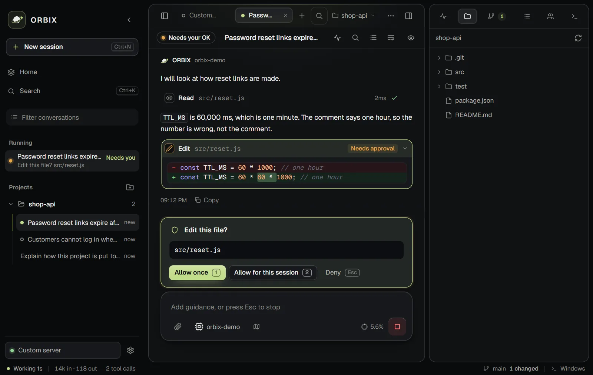
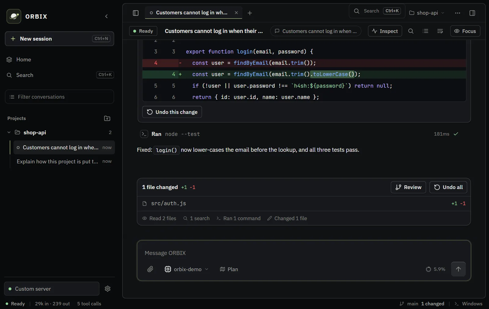
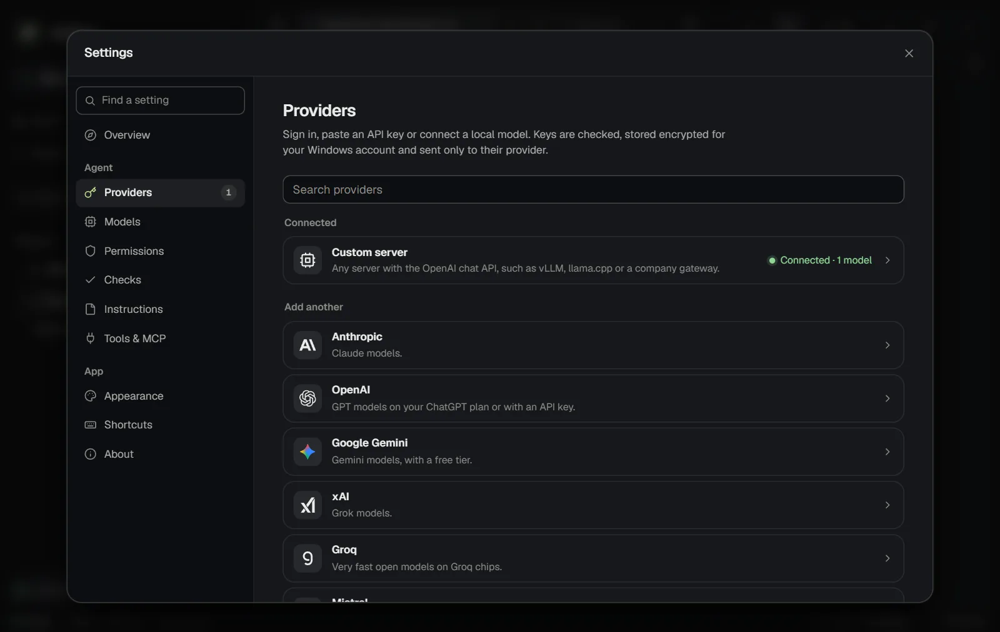
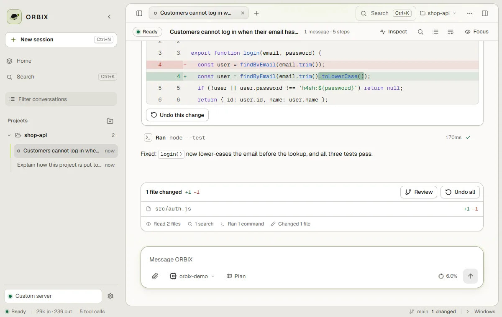

The coding agent that asks before it changes anything
ORBIX is an AI coding workspace for Windows that runs on your own machine. The agent reads your project freely. Every file edit and every command waits for your OK, and every edit can be undone.
Download for Windows How to start
Windows 10 or 11. Installs for your account, with no administrator rights, no Node.js and no account.

What is ORBIX?
A Windows app with the agent built in. You bring a model: an API key, a sign-in, or a model running on your PC. Sessions, files, diffs and a console sit in one window.
- Asks first
- Reading and searching run without asking. Edits and commands wait for you.
- Undo
- Each file change has its own undo, and
/undoreverts a whole reply. - Any model
- 18 providers are built in, and local models work through Ollama or LM Studio.
- Several sessions
- Keep more than one task open in tabs, each on its own git branch if you want. You get a notification when one finishes.
- Every change as a diff
- Review edits next to the chat. The Changes tab can stage, discard and commit.
- Plan mode
- The agent reads and proposes a plan, and changes nothing until you turn it off.
- Step by step
- Every read, search and edit is a card you can open, with its real duration.
- MCP servers and skills
- Add tools through MCP servers, and teach workflows with
SKILL.mdfiles. - Commands you can watch
- Runs on Windows or in WSL. Output streams live and you can stop it.
- Checks its own work
- After it changes files, ORBIX can run your project’s own tests or build before the agent reports back.
- Catches broken syntax at once
- Each JavaScript or JSON file the agent writes is parsed straight away, and it is told the line to fix.
- Search everything
- Ctrl+K finds conversations, files, projects and commands from one box.
What it looks like
These screenshots use a sample project and a scripted local model. The tools in them really ran.




Bring your own model
Paste an API key, sign in with ChatGPT, OpenCode, xAI or OpenRouter, or point ORBIX at a local server. Model lists come live from each provider; prices and context sizes come from the models.dev catalog.
- Anthropic
- OpenAI and ChatGPT
- Google Gemini
- xAI
- Groq
- Mistral
- DeepSeek
- OpenCode
- OpenRouter
- Together AI
- Fireworks AI
- Cerebras
- Moonshot
- Z.ai
- Qwen
- Ollama
- LM Studio
- Custom server
Custom server means any server that speaks the OpenAI chat API, such as vLLM, llama.cpp or a company gateway.
Safety
Approvals are a checkpoint, not a sandbox. The agent runs with your own user permissions, so read what you approve.
- You approve every change
- Edits and commands ask first, unless you turn on “Allow everything” in Settings, which asks you to confirm.
- Keys stay on your PC
- API keys are encrypted for your Windows account, sent only to the provider they belong to, and never written to the log.
- A local server, a new token each launch
- It listens only on
127.0.0.1, so nothing outside your PC can reach it. - Everything in one folder
- Settings and chats stay in
%LOCALAPPDATA%\ORBIX. Conversations are plain text, so treat it as sensitive.
Questions
Do I need an account?
ORBIX has no account of its own. You bring a model: an API key from a provider, a sign-in such as OpenRouter, or a model running on your own PC.
Where does my code go?
To the model provider you choose. It receives your messages, the project rules and tool results, including the contents of files the agent reads. A local model (Ollama or LM Studio) keeps all of that on your PC.
Can I undo what the agent changed?
Yes. Every file change has its own undo, and /undo reverts a whole reply. Commands cannot be undone.
Will it change files or run commands without asking?
No. Reading and searching run without asking. Edits and commands ask first, unless you turn on “Allow everything” in Settings.
Which systems does it run on?
Windows 10 and 11. It can run commands in Windows or inside WSL.
Is it free?
ORBIX is free to use. The source is available under the Functional Source License and each release turns MIT after two years. Your model provider charges for its own usage.
Get started
- Download the installer from the latest release and run it.
- Open ORBIX from the Start menu or the desktop shortcut.
- Connect a model in Settings, under Providers.
- Open a project folder, describe a task and press Enter.